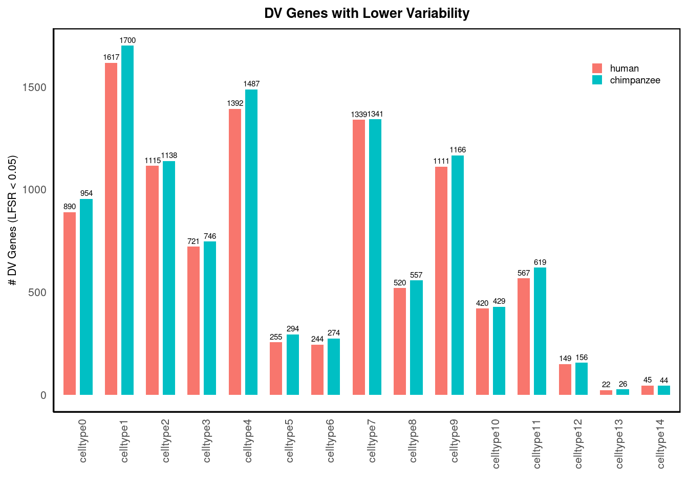
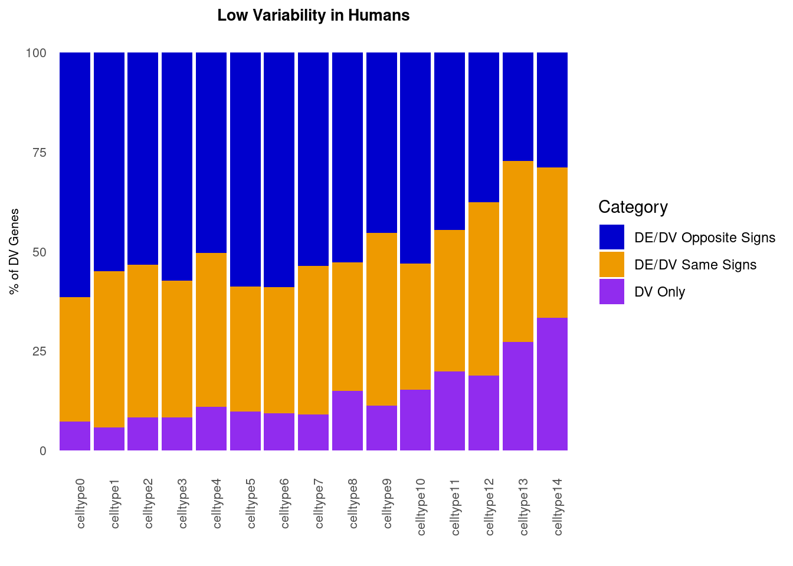
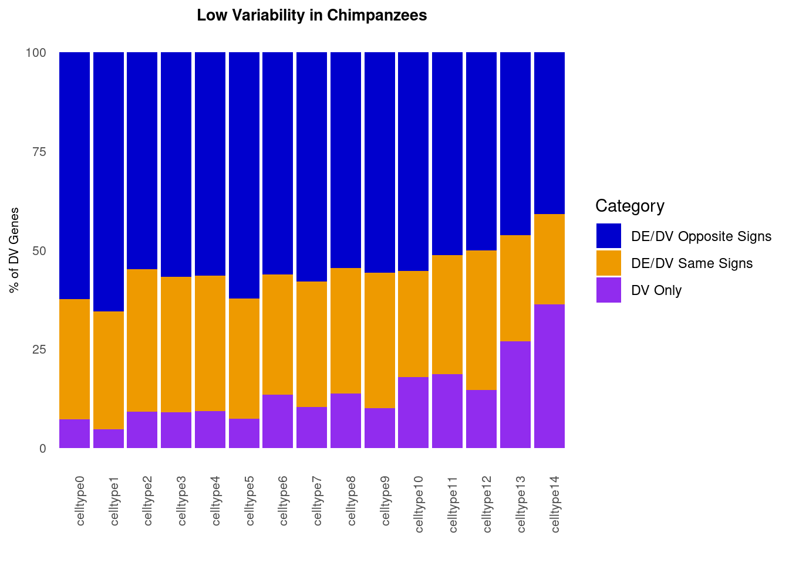

Last updated: 2025-05-22
Checks: 5 2
Knit directory: differentialDispersion/
This reproducible R Markdown analysis was created with workflowr (version 1.7.0). The Checks tab describes the reproducibility checks that were applied when the results were created. The Past versions tab lists the development history.
The R Markdown is untracked by Git. To know which version of the R
Markdown file created these results, you’ll want to first commit it to
the Git repo. If you’re still working on the analysis, you can ignore
this warning. When you’re finished, you can run
wflow_publish to commit the R Markdown file and build the
HTML.
Great job! The global environment was empty. Objects defined in the global environment can affect the analysis in your R Markdown file in unknown ways. For reproduciblity it’s best to always run the code in an empty environment.
The command set.seed(20240625) was run prior to running
the code in the R Markdown file. Setting a seed ensures that any results
that rely on randomness, e.g. subsampling or permutations, are
reproducible.
Great job! Recording the operating system, R version, and package versions is critical for reproducibility.
Nice! There were no cached chunks for this analysis, so you can be confident that you successfully produced the results during this run.
Using absolute paths to the files within your workflowr project makes it difficult for you and others to run your code on a different machine. Change the absolute path(s) below to the suggested relative path(s) to make your code more reproducible.
| absolute | relative |
|---|---|
| /project2/gilad/awchen55/differentialDispersion/data/hybrid_data_MoM_results/hybrid_line_crossfilt_sharing/ | data/hybrid_data_MoM_results/hybrid_line_crossfilt_sharing |
Great! You are using Git for version control. Tracking code development and connecting the code version to the results is critical for reproducibility.
The results in this page were generated with repository version f8a8bb8. See the Past versions tab to see a history of the changes made to the R Markdown and HTML files.
Note that you need to be careful to ensure that all relevant files for
the analysis have been committed to Git prior to generating the results
(you can use wflow_publish or
wflow_git_commit). workflowr only checks the R Markdown
file, but you know if there are other scripts or data files that it
depends on. Below is the status of the Git repository when the results
were generated:
Ignored files:
Ignored: .Rhistory
Ignored: .Rproj.user/
Ignored: .ipynb_checkpoints/
Ignored: analysis/cell_count_metrics_by_cell_type/
Ignored: analysis/scran_size_factors_debugging.nb.html
Ignored: analysis/sim500_analysis.nb.html
Ignored: analysis/simulation_cardiomyocytes_analysis.nb.html
Ignored: analysis/simulation_power_analysis.nb.html
Ignored: code/.ipynb_checkpoints/
Ignored: data/.ipynb_checkpoints/
Ignored: data/hybrid_lines_scran_normalized_data/
Ignored: output/.ipynb_checkpoints/
Untracked files:
Untracked: analysis/.ipynb_checkpoints/
Untracked: analysis/MoM_analysis.ipynb
Untracked: analysis/MoM_custom_equations_analysis.ipynb
Untracked: analysis/MoM_human_chimp_analysis.ipynb
Untracked: analysis/cell_annotations.Rmd
Untracked: analysis/differential_dispersion_lowess_method.ipynb
Untracked: analysis/first_memento_analysis_hybrid_data_notes.ipynb
Untracked: analysis/fitting_ash_hybrid_data.Rmd
Untracked: analysis/h5Seurat.h5seurat
Untracked: analysis/hybrid_data_prep_for_memento.Rmd
Untracked: analysis/memento_hybrid_lines_cell_type_analysis.ipynb
Untracked: analysis/power_analysis.ipynb
Untracked: analysis/scran_size_factors_debugging.Rmd
Untracked: analysis/sharing_dv_genes_in_cis.Rmd
Untracked: analysis/sim500_analysis.Rmd
Untracked: analysis/sim_1UMI_1000cells_no_effect.h5Seurat
Untracked: analysis/simulation_analysis.ipynb
Untracked: analysis/simulation_cardiomyocytes_analysis.Rmd
Untracked: analysis/simulation_for_MoM.Rmd
Untracked: analysis/simulation_framework.Rmd
Untracked: analysis/simulation_normal_distribution.Rmd
Untracked: code/QTL_power_analysis_null.R
Untracked: code/create_seurat_for_crossfit_hybrid.R
Untracked: code/cv_bootstrapping_method/
Untracked: code/hybrid_unsupervised_clustering.R
Untracked: code/mash_hybrid_cis.R
Untracked: code/memento_runs/
Untracked: data/MoM_data/
Untracked: data/hybrid_data_MoM_results/
Untracked: data/hybrid_data_de_genes/
Untracked: data/hybrid_lines_cpm_normalized/
Untracked: data/hybrid_lines_log_cpm_regressed_out_data/
Untracked: data/hybrid_lines_raw_data/
Untracked: data/simulations/
Untracked: output/qual_exam_figures/
Unstaged changes:
Modified: .Rprofile
Modified: analysis/differential_dispersion_hybrid_line.Rmd
Modified: analysis/differential_dispersion_hybrid_line_cpm_analysis.Rmd
Modified: analysis/negative_binomial_dispersion_estimation.Rmd
Modified: analysis/simulation_null_analysis.Rmd
Modified: analysis/simulation_power_analysis.Rmd
Modified: code/QTL_power_analysis.R
Deleted: code/step1_calculate_cell_count_metrics_lowess_method.py
Deleted: code/step1_calculate_metrics_single_cell_type.py
Deleted: code/step1_simulations.py
Deleted: code/step2_lowess_calculations_single_cell_type.py
Deleted: code/step2_residual_calculations_lowess_values.py
Deleted: code/step2_simulations.py
Deleted: code/step3_bootstrapping_cell_types_lowess_method.py
Deleted: code/step3_bootstrapping_procedure_single_cell_type.py
Deleted: code/step3_simulations.py
Deleted: data/chimp_ASE_subset.csv
Deleted: data/human_ASE_subset.csv
Note that any generated files, e.g. HTML, png, CSS, etc., are not included in this status report because it is ok for generated content to have uncommitted changes.
There are no past versions. Publish this analysis with
wflow_publish() to start tracking its development.
We want to assess the sharing of DV genes in cis. We first ran memento for DV analysis to yield effect sizes and standard errors. We then used these effect sizes and standard errors as inputs for mash. Additionally, to compare a larger number of genes across conditions, we set the effect sizes to 0 and standard errors to \(10^{16}\) for genes that were tested in one condition but not in another condition.
library(mashr)
library(ggplot2)
library(reshape2)
library(dplyr)
library(tidyr)data_path = "/project2/gilad/awchen55/differentialDispersion/data/hybrid_data_MoM_results/hybrid_line_crossfilt_sharing/"
betahat <- read.csv(paste0(data_path, "betahat_zeros.csv"), row.names = 1)
sehat <- read.csv(paste0(data_path, "sehat_inf.csv"), row.names = 1)
betahat_matrix <- as.matrix(betahat)
sehat_matrix <- as.matrix(sehat)
data_mash <- mash_set_data(betahat_matrix, sehat_matrix)
m.1by1 = mash_1by1(data_mash)
strong = get_significant_results(m.1by1,0.05)
U.pca = cov_pca(data_mash,5,subset=strong)
U.ed = cov_ed(data_mash, U.pca, subset=strong)
# Combine covariance structures
Ulist = c(U.ed, U.pca)
m.ed_zeros = mash(data_mash, Ulist = Ulist)
#saveRDS(m.ed_zeros, file = paste0(data_path ,"hybrid_crossfilt_mash_results_zeros.rds"))We first assess the number of significant DV genes within each cell type. We note DV genes that exhibit lower variability with respect to each species.
data_path = "/project2/gilad/awchen55/differentialDispersion/data/hybrid_data_MoM_results/hybrid_line_crossfilt_sharing/"
lfsr_thresh=0.05
betahat <- read.csv(paste0(data_path, "betahat_zeros.csv"), row.names = 1)
sehat <- read.csv(paste0(data_path, "sehat_inf.csv"), row.names = 1)
m.ed_zeros <- readRDS(paste0(data_path ,"hybrid_crossfilt_mash_results_zeros.rds"))
genes_higher_variability_chimps <- list()
genes_higher_variability_humans <- list()
for (cell_type in colnames(betahat)) {
genes_higher_variability_humans[[cell_type]] <- rownames(betahat[betahat[[cell_type]] > 0, ])
genes_higher_variability_chimps[[cell_type]] <- rownames(betahat[betahat[[cell_type]] < 0, ])
}
num_genesc <- c()
num_genesh <- c()
dv_total <-c()
for (i in 1:15){
sig_i=list(names(get_significant_results(m.ed_zeros,thresh=lfsr_thresh,conditions = i)))
overlap_chimp <- intersect(sig_i[[1]], genes_higher_variability_chimps[[i]])
overlap_human <- intersect(sig_i[[1]], genes_higher_variability_humans[[i]])
num_genesc <- c(num_genesc, length(overlap_chimp))
num_genesh <- c(num_genesh, length(overlap_human))
dv_total <-c(dv_total,length(sig_i[[1]]))
}
# num_genesc
# num_genesh
# dv_totaldv_gene_totals <- cbind(num_genesh,num_genesc)
colnames(dv_gene_totals) <- c('human','chimpanzee')
rownames(dv_gene_totals) <- colnames(betahat)
#dv_gene_totals
data_df <- melt(dv_gene_totals, varnames = c("Cell_Type", "Species"), value.name = "DV_Genes")
# Plot the bar graph with data labels
p1 <- ggplot(data_df, aes(x = Cell_Type, y = DV_Genes, fill = Species)) +
geom_bar(stat = "identity", position = position_dodge(width = 0.8), width = 0.6) +
geom_text(aes(label = DV_Genes),
position = position_dodge(width = 0.8),
vjust = -0.5,
size = 2) +
labs(title = "DV Genes with Lower Variability",
x = "",
y = "# DV Genes (LFSR < 0.05)") +
theme_minimal() +
theme(
plot.title = element_text(size = 10, face = 'bold', hjust = 0.5),
panel.grid = element_blank(),
axis.line = element_line(color = "black", size = 0.4),
panel.border = element_rect(color = "black", fill = NA, size = 0.8),
axis.title.x = element_text(size = 8),
axis.title.y = element_text(size = 8),
axis.text.x = element_text(angle = 90, hjust = 1, size=8),
axis.text.y = element_text(size = 8),
legend.position = c(0.98, 0.95), # Position in the top-right corner inside the plot
legend.justification = c("right", "top"),
legend.title = element_blank(), # Remove the legend title
legend.background = element_rect(fill = "white", color = NA, size = 0.2),
legend.text = element_text(size = 7),
legend.key.size = unit(0.3, "cm")
)
p1
We first run mash on the effect sizes and standard errors of DE analysis using memento.
data_path = "/project2/gilad/awchen55/differentialDispersion/data/hybrid_data_MoM_results/hybrid_line_crossfilt_sharing/"
betahat <- read.csv(paste0(data_path, "de_betahat_zeros.csv"), row.names = 1)
sehat <- read.csv(paste0(data_path, "de_sehat_inf.csv"), row.names = 1)
betahat_matrix <- as.matrix(betahat)
sehat_matrix <- as.matrix(sehat)
data_mash <- mash_set_data(betahat_matrix, sehat_matrix)
m.1by1 = mash_1by1(data_mash)
strong = get_significant_results(m.1by1,0.05)
U.pca = cov_pca(data_mash,5,subset=strong)
U.ed = cov_ed(data_mash, U.pca, subset=strong)
# Combine covariance structures
Ulist = c(U.ed, U.pca)
m.ed_zeros_de = mash(data_mash, Ulist = Ulist) - Computing 15939 x 373 likelihood matrix.
- Likelihood calculations took 21.44 seconds.
- Fitting model with 373 mixture components.
- Model fitting took 12.07 seconds.
- Computing posterior matrices.
- Computation allocated took 4.08 seconds.#saveRDS(m.ed_zeros_de, file = paste0(data_path ,"hybrid_crossfilt_mash_results_zeros_de.rds"))We categorize DV genes into three types: DV genes that are only DV, DV genes that are also DE with the same sign, or DV/DE genes with opposite signs.
betahat_dv <- read.csv(paste0(data_path, "betahat_zeros.csv"), row.names = 1)
betahat_de <- read.csv(paste0(data_path, "de_betahat_zeros.csv"), row.names = 1)
genes_lower_variability_chimps <- list()
genes_lower_variability_humans <- list()
cell_types <- colnames(betahat)
dv_only_h <- c()
dv_de_same_h <- c()
dv_de_opp_h <- c()
h_values <- c()
dv_only_c <- c()
dv_de_same_c <- c()
dv_de_opp_c <- c()
c_values <- c()
for (i in 1:length(cell_types) ){
cell_type = cell_types[i]
# get signs of dv
genes_lower_variability_h_dv <- rownames(betahat_dv[betahat_dv[[cell_type]] > 0, ])
genes_lower_variability_c_dv <- rownames(betahat_dv[betahat_dv[[cell_type]] < 0, ])
# get signs of de
genes_lower_expression_h <- rownames(betahat_de[betahat_de[[cell_type]] > 0, ])
genes_lower_expression_c <- rownames(betahat_de[betahat_de[[cell_type]] < 0, ])
# sig dv and de
sig_de <- names(get_significant_results(m.ed_zeros_de,thresh=0.05, conditions = i))
sig_dv <- names(get_significant_results(m.ed_zeros,thresh=0.05, conditions = i))
# get signs of sig dv and de
dv_low_h <- intersect(sig_dv,genes_lower_variability_h_dv)
dv_low_c <- intersect(sig_dv,genes_lower_variability_c_dv)
de_low_h <- intersect(sig_de,genes_lower_expression_h)
de_low_c <- intersect(sig_de,genes_lower_expression_c)
# categorize dv/de genes
dv_de_same_sign_h <- intersect(dv_low_h,de_low_h)
dv_de_opp_sign_h <- intersect(dv_low_h,de_low_c)
dv_de_same_sign_c <- intersect(dv_low_c,de_low_c)
dv_de_opp_sign_c <- intersect(dv_low_c,de_low_h)
# count dv genes for humans low var
dv_de_same_h <- c(dv_de_same_h,length(dv_de_same_sign_h))
dv_de_opp_h <- c(dv_de_opp_h,length(dv_de_opp_sign_h))
dv_only_h <- c(dv_only_h,length(dv_low_h) - length(dv_de_same_sign_h) - length(dv_de_opp_sign_h))
h_values <- c(h_values,length(dv_de_same_sign_h),length(dv_de_opp_sign_h),length(dv_low_h) - length(dv_de_same_sign_h) - length(dv_de_opp_sign_h))
# count dv genes for chimps low var
dv_de_same_c <- c(dv_de_same_c,length(dv_de_same_sign_c))
dv_de_opp_c <- c(dv_de_opp_c,length(dv_de_opp_sign_c))
dv_only_c <- c(dv_only_c,length(dv_low_c) - length(dv_de_same_sign_c) - length(dv_de_opp_sign_c))
c_values <- c(c_values,length(dv_de_same_sign_c),length(dv_de_opp_sign_c),length(dv_low_c) - length(dv_de_same_sign_c) - length(dv_de_opp_sign_c))
}# Data setup
cell_types <- paste0('celltype', 0:14)
# Combine into a data frame
data <- data.frame(
CellType = rep(cell_types, each = 3),
Category = rep(c('DE/DV Same Signs', 'DE/DV Opposite Signs','DV Only'), times = 15),
Value = h_values
)
# Convert to percentage within each cell type
data <- data %>%
group_by(CellType) %>%
mutate(Percentage = Value / sum(Value) * 100)
# Ensure the order of cell types is preserved numerically
data$CellType <- factor(data$CellType, levels = paste0('celltype', 0:14))
# Plot
p3 <- ggplot(data, aes(x = CellType, y = Percentage, fill = Category)) +
geom_bar(stat = 'identity') +
scale_fill_manual(values = c('blue3', 'orange2', 'purple2')) +
labs(
title = 'Low Variability in Humans',
y = '% of DV Genes',
x = ''
) +
theme_minimal() +
theme(
plot.title = element_text(size = 10, face = 'bold', hjust = 0.5),
axis.text.x = element_text(size = 8, angle = 90, hjust = 1),
axis.text.y = element_text(size = 8),
axis.title.y = element_text(size = 8),
panel.grid = element_blank(),
#legend.position = "none" # Hide the legend since labels are clear
)
p3
# Data setup
cell_types <- paste0('celltype', 0:14)
# Combine into a data frame
data <- data.frame(
CellType = rep(cell_types, each = 3),
Category = rep(c('DE/DV Same Signs', 'DE/DV Opposite Signs','DV Only'), times = 15),
Value = c_values
)
# Convert to percentage within each cell type
data <- data %>%
group_by(CellType) %>%
mutate(Percentage = Value / sum(Value) * 100)
# Ensure the order of cell types is preserved numerically
data$CellType <- factor(data$CellType, levels = paste0('celltype', 0:14))
# Plot
p4 <- ggplot(data, aes(x = CellType, y = Percentage, fill = Category)) +
geom_bar(stat = 'identity') +
scale_fill_manual(values = c('blue3', 'orange2', 'purple2')) +
labs(
title = 'Low Variability in Chimpanzees',
y = '% of DV Genes',
x = ''
) +
theme_minimal() +
theme(
plot.title = element_text(size = 10, face = 'bold', hjust = 0.5),
axis.text.x = element_text(size = 8, angle = 90, hjust = 1),
axis.text.y = element_text(size = 8),
axis.title.y = element_text(size = 8),
panel.grid = element_blank(),
#legend.position = "none" # Hide the legend since labels are clear
)
p4
sessionInfo()R version 4.2.0 (2022-04-22)
Platform: x86_64-pc-linux-gnu (64-bit)
Running under: CentOS Linux 7 (Core)
Matrix products: default
BLAS/LAPACK: /software/openblas-0.3.13-el7-x86_64/lib/libopenblas_haswellp-r0.3.13.so
locale:
[1] LC_CTYPE=en_US.UTF-8 LC_NUMERIC=C LC_TIME=C
[4] LC_COLLATE=C LC_MONETARY=C LC_MESSAGES=C
[7] LC_PAPER=C LC_NAME=C LC_ADDRESS=C
[10] LC_TELEPHONE=C LC_MEASUREMENT=C LC_IDENTIFICATION=C
attached base packages:
[1] stats graphics grDevices utils datasets methods base
other attached packages:
[1] tidyr_1.2.0 dplyr_1.0.9 reshape2_1.4.4 ggplot2_3.3.6 mashr_0.2.79
[6] ashr_2.2-54
loaded via a namespace (and not attached):
[1] Rcpp_1.0.12 invgamma_1.1 mvtnorm_1.1-3 lattice_0.20-45
[5] assertthat_0.2.1 rprojroot_2.0.3 digest_0.6.29 utf8_1.2.2
[9] truncnorm_1.0-8 R6_2.5.1 plyr_1.8.7 evaluate_0.15
[13] highr_0.9 pillar_1.7.0 rlang_1.0.2 rstudioapi_0.13
[17] irlba_2.3.5 jquerylib_0.1.4 Matrix_1.5-3 rmarkdown_2.14
[21] labeling_0.4.2 stringr_1.4.0 munsell_0.5.0 mixsqp_0.3-48
[25] compiler_4.2.0 httpuv_1.6.5 xfun_0.30 pkgconfig_2.0.3
[29] SQUAREM_2021.1 htmltools_0.5.2 tidyselect_1.1.2 tibble_3.1.7
[33] workflowr_1.7.0 fansi_1.0.3 crayon_1.5.1 withr_2.5.0
[37] later_1.3.0 grid_4.2.0 jsonlite_1.8.0 gtable_0.3.0
[41] lifecycle_1.0.1 DBI_1.1.2 git2r_0.30.1 magrittr_2.0.3
[45] scales_1.2.0 cli_3.3.0 stringi_1.7.6 farver_2.1.0
[49] fs_1.5.2 promises_1.2.0.1 bslib_0.3.1 ellipsis_0.3.2
[53] vctrs_0.4.1 generics_0.1.2 rmeta_3.0 tools_4.2.0
[57] glue_1.6.2 purrr_0.3.4 abind_1.4-5 fastmap_1.1.0
[61] yaml_2.3.5 colorspace_2.0-3 knitr_1.39 sass_0.4.1